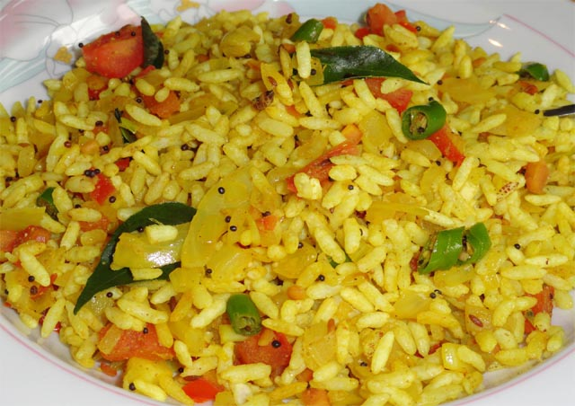

Uggani receipe

It is a simple dish for breakfast with puffed rice. It is healthy and tasty as well.
Ingredients
- Puffed rice
- Sunflower oil
- Mustard seeds
- Jeera
- Curry leaves
---Vegitables Sliced---
- Green Chillies
- Onions
- Tomato
- Salt
- Water
- Gun Powder
Steps
- Switch on the stove and place a bowl.
- Add Sunflower oil - 2tsps.
- After 2 mins add Mustard seeds, jeera, curry leaves, green chillies, a pinch of turmeric and cook for 5-10 mins.
- Add onions and tomato cook for 10-15mins
- Meanwhile, soak the puffed rice ,squeeze and keep it aside.
- mix this puffed rice with gun powder.
- Add the puffed rice to the cooking bowl and mix it well
- Sprinkle some coriander leaves and Done, Uggani is ready!!!
Back to Home Page